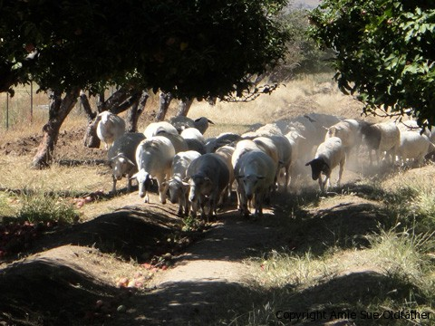

Apple Pick’n Season
 It was my plan to take all these amazing pictures of us picking apples but it just didn’t happen. I was too busy
It was my plan to take all these amazing pictures of us picking apples but it just didn’t happen. I was too busy eating picking apples to take any pictures.
Though we had a great time, I will admit it felt a bit odd picking apples in an orchard that was surrounded by desert. haha Never seen such a goofy site before. It was an organic orchard that just reopened after 4 years of struggling with their crops. The apples were so small, about the size of a plum but none the less they were fun to snatch out of the branches.
The orchard had a herd of lambs that roamed up and down the paths so I stayed busy trying to keep out of their way and in the meantime I was also dodging these HUGE red bugs that were dive bombing me.
I swear they were the Protectors of the Apples! I couldn’t tell what the heck they were but then I wasn’t going to stick around to examine them either. :) I am sure the farmers watching from afar thought that I was running around in great enthusiasm in picking apples, little did they know that I was being chased by winged creatures!
In the end we picked about 80 lbs of apples! It was a good 1 1/2 hour drive to this orchard and we were very excited by this new adventure. We had already experienced cherry picking and cranberry bogging together and now I was able to scratch apple picking off the bucket list! We were excited to pick them once we got there. We were excited to load them in the truck. We were excited to drive home. We were excited to see 80 lbs of apples sitting on our kitchen counter….I was excited to “process them”.

After slicing the 276th one, I wasn’t all that excited. lol I am sort of kidding, I did actually have fun processing them. It took me 4 days straight to tend to them all! I dried 41 trays worth in the dehydrator. Can we say, Christmas gifts?” You will notice in the pictures below that I played around a bit with shapes and sizes.
I was getting down to the end of apples, growing a little weak in the wrist from slicing them all, so I decided to make apple butter with the last 11 1/2 lbs. I sort of felt bad, like I was searching for an easy way out, but soon that feeling of guilt faded. Peeling 11 1/2 lbs of itsy bitsy apples made apple slicing look a whole lot better. lol I managed to keep all my fingernails and skin intact.
I forced all the apple butter into jars and stood back, gazing upon them with great pride. Look at all that luscious apple butter?! Then I it hit me, what the heck am I going to do with it all?! I didn’t can the apple butter so that meant it had a much shorter self life date. So I slapped a few labels on the jars and took them all to the office where I pawned them off to everyone who crossed my path. Problem solved. :) I love sharing food anyway so it was a win for all involved. So, that wraps up this adventure!
© AmieSue.com